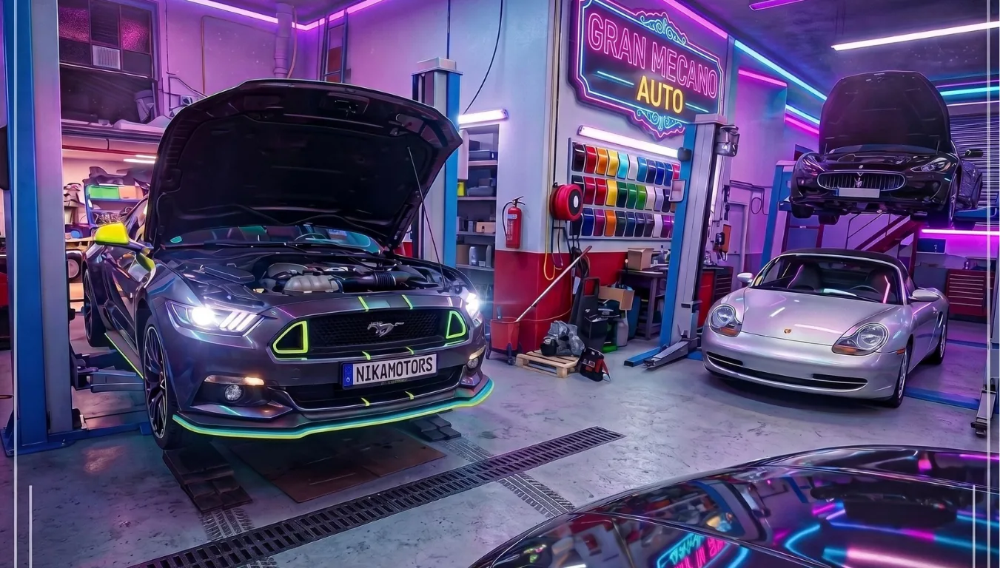

Oltre 20 anni di esperienza
Una squadra nizzarda attiva dal 2004 che conosce ogni via, ogni galleria, ogni ingorgo delle Alpi Marittime.
Dépannage Auto Nice interviene dal 2004 a Nizza e nelle Alpi Marittime. Quando chiamate, risponde un tecnico — non un call center che smista il vostro guasto al primo disponibile.
La nostra officina si trova nella zona industriale del Quai de la Blanquière, a Nizza. Da lì partono i carri attrezzi e lì si fanno le riparazioni che non si possono fare sul posto.

Una squadra nizzarda attiva dal 2004 che conosce ogni via, ogni galleria, ogni ingorgo delle Alpi Marittime.
Patente per mezzi pesanti, formazione al traino e abilitazioni per veicoli leggeri e commerciali aggiornate. Lavoro pulito e sicuro.
Pratica gestita con la vostra compagnia — non anticipate nulla quando la polizza vi copre.
Davvero attivi di notte, la domenica e nei festivi. Nessuna segreteria — risponde un tecnico.
Il pulsante di chiamata vi segue lungo tutta la pagina — giorno, notte, fine settimana.